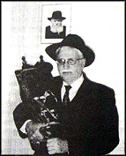

– לדמותו של הרה ” ח ר ’ נתן קרעפל קובלנוב ע ” ה – בשבוע שעבר נפטר החסיד ר’ נתן ק
בשבוע שעבר נפטר החסיד ר’ נתן קרעפל קובלנוב, מוותיקי החסידים בבית הכנסת חב”ד בבני ברק, בן למשפחת חסידים שמסרה את נפשה עבור קיום תורה ומצוות ועבור חסידות וחסידים מאחורי מסך הברזל. ר’ קרעפל עצמו שילם על כך מחיר יקר בכמה ש
– לדמותו של הרה”ח ר’ נתן קרעפל קובלנוב ע”ה –
בשבוע שעבר נפטר החסיד ר’ נתן קרעפל קובלנוב, מוותיקי החסידים בבית הכנסת חב”ד בבני ברק, בן למשפחת חסידים שמסרה את נפשה עבור קיום תורה ומצוות ועבור חסידות וחסידים מאחורי מסך הברזל. ר’ קרעפל עצמו שילם על כך מחיר יקר בכמה שנות מאסר ועבודת פרך, כאשר בכל המקומות הוא שומר על זהות יהודית מתוך מסירות נפש * עם פטירתו פורס בית משיח תיאור מדהים של משפחה חב”דית שלימה שנאסרה בחודש ניסן תשי”א באשמת ניסיון הברחת הגבול דרך לבוב

ר’ נתן ע”ה, דמות מיוחדת, נולד בעיירה החסידית נעוול אך כבר בילדותו עבר עם בני משפחתו ללנינגרד שם סבלו מרורים. לאחר שנים רבות הצליח לעלות עם רעייתו וילדיו לארץ הקודש, כאן התגורר בבני ברק והיה רופא ילדים מצליח ומוותיקי קהילת חב”ד בבני ברק.
בהתוועדויות השבתיות שהתקיימו בבית הכנסת שברחוב הרב קוק, לאחר אמירת ‘לחיים’ וניגון חסידי, היה ר’ קרעפל חוזר מדי פעם אחורה, אל הימים הטרופים ההם, לבית הוריו ר’ אליעזר ומרת עלקא, כמו גם למחזה הנדיר של משפחה שלימה (!) המוגלית יחדיו לגלות ולעבודת פרך בירכתי סיביר. כדי שדור אחרון ידע מהי מסירות נפש, העלה את זכרונותיו אלו בספר בשילוב מסמכים ותמונות המעידים על החקירות והגלות בסיביר.
המאסר
בתחילה גרו ר’ אליעזר ומרת עלקא קובלנוב עם חמשת ילדיהם בנעוול, והללו ספגו מנה גדושה של חינוך חסידי. אבי המשפחה לא הסתפק במה שלימדם, ושכר עבורם מלמדים חסידיים. באותה תקופה היו הרדיפות מנת חלקם מדי יום ביומו, כפי שסיפר ר’ קרעפל: “בתקופה שגרנו בנעוול אבא סבל הרבה צרות מהקומוניסטים. כמה פעמים נאסר והושלך לבית הכלא כאשר כל רכושנו הוחרם. הציקו לנו ורדפו אותנו עד שלא היתה לנו אפשרות להמשיך ולגור בנעוול”.
בשל הרדיפות עברה משפחת קובלנוב ללנינגרד בשנת תרצ”א, שם הסכים האב לעבוד כפועל פשוט העיקר שלא יצטרך לעבוד בשבת. הוא השתדל להצניע את צעדיו כדי שלא להרגיז את השלטונות. אולם חרף זאת, המשטרה החשאית שמה עין על “היהודי הפשוט” שהגיע היישר מהעיירה החסידית נעוול. כעבור כשנה ‘תפרו לו’ השלטונות תיק והאשימוהו במסחר אסור. ר’ אליעזר הוכנס למעצר יחד עם החסיד הרב שמואל נימוטין. תלאות רבות עבר במעצר, עד שכאשר שב לביתו, אפילו קרוביו התקשו לזהותו…
הרדיפות בנעוול ובלנינגרד לא הכניעו אותו, והוא פתח את ביתו בפני חסידים והתוועדויות כמו גם בפני אורחים חסידיים שלא היה להם היכן ללון והם הפכו לבני בית אצלו, ביניהם החסיד הנודע הרב מיכאל דבורקין שהיה עשיר אך נכסיו הוחרמו על ידי הקומוניסטים.
בימי י”ט כסלו, יום גאולת אדמו”ר הזקן, נערכו בבית המשפחה התוועדויות רבתיות עם משתתפים רבים, וזאת על אף הסכנה העצומה. התוועדויות אלו היו גדושות בשמחה על אף כל הצרות. לא פעם ההתלהבות שברה שיאים, והחסידים פצחו בריקוד על השולחן. ולמה על השולחן דווקא? כי מתחת למשפחת קובלנוב התגורר קצין משטרה בכיר, ואם היו רוקדים על הרצפה, יכול היה הלה להבין שיש שמחה חסידית. פעם פרצה השמחה גבולות, ולאחר התוועדות רועשת במיוחד, התעניין הקצין לפשר הרעש שהפריע את שנתו. ר’ אליעזר הבהיר לו כי מדובר בסך הכל בחגיגת יום הולדת.
“הייתי יושב בהתוועדויות האלו שעות ארוכות, לרוב עם אחי קרעפל, מקשיב ומסתכל ומכניס ללבי מה שראיתי ושמעתי. אבא נהנה מנוכחותנו. הבחנתי בכך שמפעם לפעם השמיע דברים לחבריו, אבל הועיד אותם בעצם אל אחי ואלי. אמא היתה כובשת חיוך וצועקת לעברנו שמאוחר כבר ועלינו ללכת לישון, אך אנחנו היינו יושבים בקצה הספסל כשעינינו נעצמות לאט לאט נוכח קולות המדברים והניגונים החסידיים. כך היינו נרדמים”.
משפחת קובלנוב נסה על נפשה
במלחמת העולם השניה, עברה משפחת קובלנוב תלאות רבות.
העיר לנינגרד מוקפת נהרות וכל הגשרים שחיברו את העיר עם העולם הגדול, הופגזו על ידי הגרמנים. בחודשי החורף ניצלו התושבים את העובדה שהנהרות קפאו ועברו על גבי הקרח בעוד הנאצים מפגיזים את השיירות על האגם. בט”ו שבט תש”ב הצליחה משפחת קובלנוב בחסדי ה’ לחצות את האגם בשלום, ולאחר נסיעה ארוכה ורבת תלאות הגיעו לכפר אילי כעשרים וחמישה ק”מ מקזחסטן, שם התגוררו במשך למעלה משנתיים.
הבן הבכור ר’ מענדל עבר להתגורר באלמא אטא בזכות לימודי הרפואה שלמד. ואכן, לימודיו היו לתועלת כשנתיים לאחר מכן, כאשר רבי לוי יצחק שניאורסאהן ע”ה, אביו של הרבי, הגיע לאלמא אטא והיה חולה וחלש מאוד. ר’ מענדל היה אפוא לעזר רב בשל היותו סטודנט לרפואה. הוא ניצל את קשריו והצליח להביא אליו פרופסור שניסה לטפל בו.
לאחר חודשיים ימים מהפטירה של רבי לוי יצחק, עברה משפחת קובלנוב להתגורר ברחוב בו גרה הרבנית חנה. מאז היו בני משפחת קובלנוב לעזר ולסיוע עבור הרבנית הצדקנית. ר’ קרעפל ע”ה סיפר שהיה מגיע אליה תדירות בשליחות אביו ומביא לה מוצרים כשרים שונים כדי להחיותה ולקיימה.
בתום מלחמת העולם השניה, נסעו בני משפחת קובלנוב ללבוב כדי לנסות לצאת מברית המועצות, אך הם לא הצליחו לממש את השאיפה הזאת ובלית ברירה שבו ללנינגרד, מבלי שחשבו מה עוד צפוי להם מידם של אנשי הרשע הקומוניסטים. משפחת קובלנוב שוב הייתה לבית וועד לחסידים וביתם היה פתוח לרווחה לכל עובר ושב.
סיפר ר’ קרעפל: “פעם, כאשר חזר אבא מבית הכנסת, סיפר לאמא שהגיעו מטשקנט בניו של ר’ שמואל פרוס, זושא ובערל, ולפחות אחד מהם צריך לאכול אצלנו מכיון שאמם נפטרה בעוד אביהם יושב בבית סוהר בטשקנט. אמנו סברה כי אסור להפריד בין האחים, ולכן היא מבקשת ששני האחים יתארחו בביתנו. זכורני שבאחת מארוחות הצהרים, הזהירה אותי אמא שלא לקחת מהקציצות השלמות והיפות, אלא מהקציצות המפורקות, על מנת שהאחים פרוס יקבלו את המנות היפות. עשרות שנים אחר כך, בארץ ישראל, אמר ר’ זושא כי הטעם מהקציצות של אמנו עדיין שמור עמו”…
ליל הסדר השחור
לאחר המלחמה הבריחו רבים מחסידי חב”ד את הגבול דרך העיר לבוב, כאשר הם מצוידים בתעודות מזויפות של אזרחי פולין, עד שגל מעצרים קטע את מערך ההברחה. אנשי הק.ג.ב. לא הסתפקו במעצרים שנעשו בלבוב, ובין השנים תש”ח-תשי”א נעצרו עשרות חסידים באשמת קשר לבריחה דרך לבוב. המעצרים כולם בוצעו על ידי מטה הק.ג.ב. בלנינגרד.
המאסרים הגיעו לשיאם בשלהי חורף תשי”א, או אז נעצרו רבים מחסידי חב”ד ובהם גם ר’ אליעזר קובלנוב בעת ששהה בעיר פינסק לרגל עסקים. כמו יתר הנאסרים, הועבר היישר לשפולרקע – בית הסוהר המרכזי ומטה המשטרה החשאית בלנינגרד, שם סבל רבות מחקירות ומעינויים.
בחודשים הבאים עצרו אנשי הק.ג.ב. בזה אחר זה, את כל בני ובנות משפחת קובלנוב, והם הועברו לשפולרקע, שם נחקרו, נשפטו ונידונו למאסרים ממושכים בעוון בגידה. גם ר’ קרעפל ע”ה ‘זכה’ למשפט מהיר ולשילוח לארץ גזרה.
על האווירה בבית הכלא סיפר ר’ קרעפל קובלנוב: “הוכנסתי לתא בבית הסוהר שם היו עוד כמה מאנ”ש: האחים ר’ דוד לייב ור’ אברהם אהרן ע”ה, ור’ חיים מאיר מינץ שנפטר בגלות. שרנו כל הזמן ניגונים. בבוקר קמתי, ולאחר נטילת ידיים קראתי: “יהודים!” ופתחתי בשירה “וטהר לבנו לעבדך” והם ענו לי: “אוי קרעפל, הצלת אותנו”. היהודים שהיו מדוכאים מצרות התעוררו וחיו מהניגון.
“מעולם לא קרה שלא חבשנו כיסוי ראש הן ברחוב והן בבית. גם בבית הסוהר עשיתי לי כיסוי ראש ממטפחת.
במשך מספר שנים שהה ר’ קרעפל בגלות קשה לצד עבודת פרך, קור, מחלות ורעב. רק בניסים גדולים שרד ושב בשלום לבית הוריו עם שאר בני המשפחה. בזיכרונותיו הוא מציין כי עם הגיעו ללנינגרד אביו אמר לו שכעת לא הזמן לדבר אלא להניח תפילין – מה שלא יכל לעשות כמובן בסיביר…
לימים זכה ר’ קרעפל לעלות לארץ הקודש והתיישב בבני ברק, כאן היה רופא ילדים מוצלח, ומאנשי קהילת חב”ד בבני ברק, ומפעם לפעם פתח וסיפר על מסירות הנפש המשפחתית מאחורי מסך הברזל.
(בגיליון הבא יובאו באריכות סיפורים מרגשים על אודות מאסרו ומסירות נפשו של ר’ נתן-קרעפל קובלנוב ע”ה)